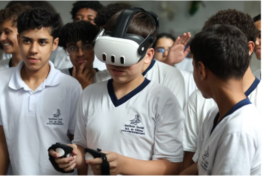
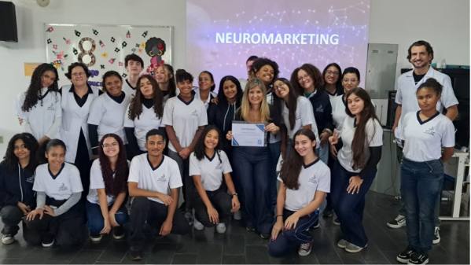
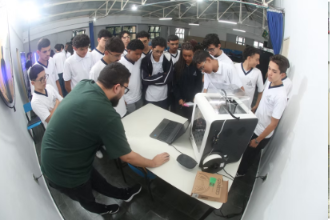
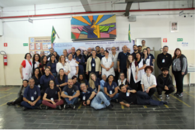
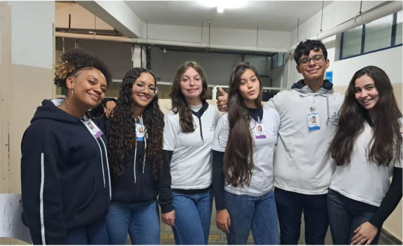
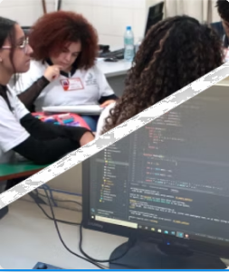
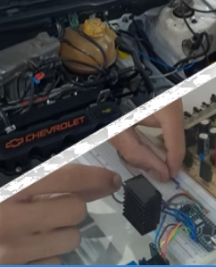
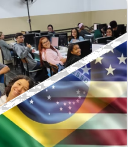
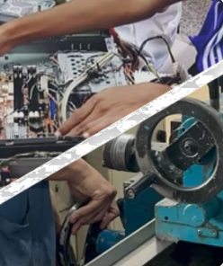
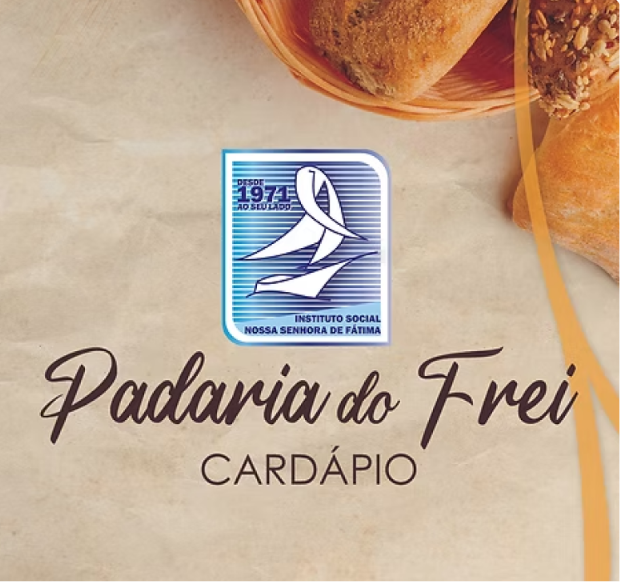

"Acompanhe os momentos especiais do Instituto Social Nossa Senhora de Fátima em nossa galeria de fotos. Confira registros de eventos,
atividades e conquistas dos nossos alunos.Fique por dentro também das últimas notícias e novidades da nossa comunidade educativa,
sempre em busca de transformar vidas por meio da educação e qualificação profissional."










“Estudar aqui foi um divisor de águas na minha vida. A escola não só me deu base técnica, mas contribuiu diretamente para a formação do profissional e do cidadão que sou hoje. Foi aqui que tive meu primeiro direcionamento e minha primeira oportunidade no mercado de trabalho, que marcou o início da minha trajetória. Hoje, como Diretor Executivo no BTG Pactual, deixo o recado: tenham paciência, foquem no processo e estejam sempre abertos a aprender. O crescimento vem com o tempo e com a capacidade de se adaptar às oportunidades.”
Ricardo Hessel de Araújo

“ Gostaria de agradecer ao Instituto pela oportunidade e por todo aprendizado que tive durante o curso de Administração no ano de 2022. Foi uma experiência muito importante para minha formação pessoal e profissional, que abriu várias portas para mim. Inclusive, muitos conhecimentos que adquiri aqui continuam sendo desenvolvidos nos trabalhos e projetos da faculdade que curso atualmente. É muito gratificante voltar hoje para compartilhar um pouco dessa trajetória com os novos alunos.”
Eloisa Rosa Pereira

“ Fiz o curso em 2022 e hoje curso Ciências Contábeis no Senac. Apesar de não ter seguido na área do curso, o Frei me abriu muitas portas em relação a networking tanto com alunos quanto com professores, e eu me sinto imensamente grata por ter participado de um ambiente tão acolhedor. É uma experiência pra vida toda. Agradeço pela oportunidade de retornar com meu conhecimento adquirido com o passar dos anos e compartilhá-lo com os novos alunos.”
Júlia Freitas da Mata

“ Fazer o curso de Administração foi muito importante para a minha formação. Aqui adquiri conhecimentos e experiências que me ajudaram a chegar mais preparado ao mercado de trabalho e à faculdade. Atualmente trabalho na área de projetos em uma multinacional, e tenho muito orgulho de ter iniciado minha trajetória aqui. Sou muito grato pela oportunidade de ter estudado na escola e recomendo aos alunos que aproveitem ao máximo cada aprendizado, pois o preparo faz toda a diferença no futuro.”
Brendow Mesquita de Jesus

“ O Frei permitiu que eu descobrisse a área profissional que sou apaixonado até hoje. Agora sou professor de Informática no Instituto, e agradeço a oportunidade que recebi de lecionar aqui. Unindo tecnologia, educação e moral, podemos reorientar nosso ensejo em nos melhorar, e, consequentemente, melhorar a vida de nosso próximo.”
Bruno de Oliveira

Horário de funcionamento da padaria: de segunda a sexta das 6h às 16h e aos sábados das 6h às 11h. *durante o período de férias escolares, funcionamento aos sábados será das 6h às 8h.* Para encomendas: (11) 96398-6254 Whatsapp ou adm@acaonsfatima.org.br
Nossos produtos podem ser adquiridos diretamente no local. Além disso, aceitamos encomendas para empresas da região, tanto de pães quanto dos nossos deliciosos Panetones do Frei nas festas de fim de ano. Venha nos visitar e saborear o melhor da nossa padaria!
Todos os dias, nossa padaria traz para você produtos fresquinhos, feitos com amor e cuidado. Do tradicional pão francês aos croissants e bolos caseiros, cada item é preparado com dedicação para garantir sabor e qualidade. Ao longo do ano, abrimos nosso forno para produzir delícias especiais que celebram as datas festivas. No final do ano, temos o famoso Panetone do Frei, e em junho, o tradicional Pão de Santo Antônio, uma verdadeira tradição que aquece corações. Venha nos visitar e saborear essas delícias!


(11) 3798-5037 - Secretaria
(11) 96398-6252 - Secretaria - Whatsap
secretaria@acaonsfatima.org.br
(11) 96398-6252 - Encomendas da padaria do Frei
(11) 96398-6253 - CEDESP Ave Maria
@cedesp.avemaria
© 2024 Todos os direitos reservados para
Instituto Social Nossa Senhora de Fátima.